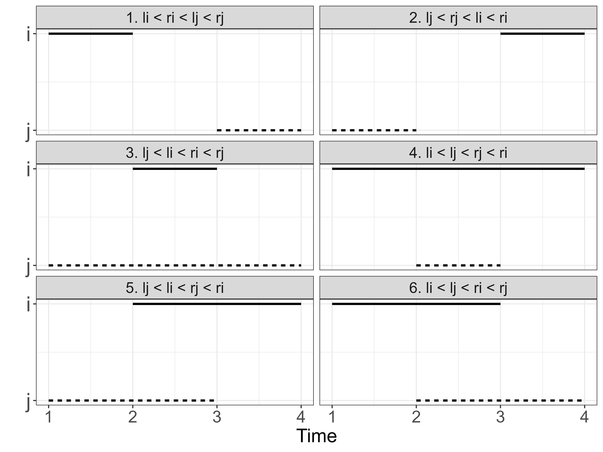
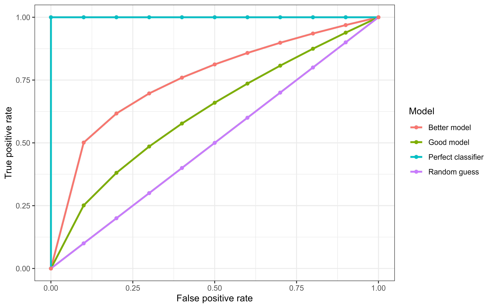

6 Discrimination
This page is a work in progress and minor changes will be made over time.
This chapter discusses ‘discrimination measures’, which evaluate how well models separate (or ‘discriminate’) observations into different risk groups. A model is said to have good discrimination if it correctly predicts that one observation is at higher risk of the event of interest than another, where the prediction is ‘correct’ if the observation predicted to be at higher risk does indeed experience the event sooner. In the survival setting, the ‘risk’ is taken to be the continuous ranking prediction (and by extension the prognostic index prediction) introduced in Chapter 5.
These measures can be grouped into two categories: concordance indices (Section 6.1), which assess a model’s discrimination by comparing pairs of observations to determine if higher predicted risk corresponds to worse outcomes; and area-under-the-curve (AUC) measures, which evaluate discrimination by converting predicted risks into binary decisions at different cut-off values and assessing how well those decisions align with true positives and true negatives. In binary classification, the AUC and concordance index are identical. However, in survival analysis there are multiple definitions of the concordance index, and the true positive and negative rates are also not uniquely defined due to censoring and the time-dependent nature of the outcome. These additional complexities require more careful treatment in the survival setting.
6.1 Concordance Indices
Concordance indices measure the proportion of cases in which the model correctly ranks a pair of observations according to their risk. As a ranking measure, the exact predicted value is discarded, only its relative ordering is required. For example, given predictions \(\{100,2,299.3\}\), only their rankings, \(\{2,1,3\}\), are used by concordance measures.
These measures may be best understood in terms of two key definitions: ‘comparable’, and ‘concordant’.
Definition 6.1 (Concordance) Let \((i,j)\) be a pair of observations with outcomes \(\{(t_i,\delta_i),(t_j,\delta_j)\}\) and let \(\{r_i,r_j\} \in \mathbb{R}\) be their respective risk predictions. Then \((i,j)\) are called (F. E. J. Harrell et al. 1984; F. E. Harrell, Califf, and Pryor 1982):
- Comparable if \(t_i < t_j\) and \(\delta_i = 1\);
- Concordant if \(r_i > r_j\).
Note that this book defines risk rankings such that a higher value implies higher risk of event and thus lower expected survival time (Chapter 5), hence a pair is concordant if \((t_i < t_j \wedge r_i > r_j)\). Other sources may instead assume that higher values imply lower risk of event and hence a pair would be concordant if \((t_i < t_j \wedge r_i < r_j)\).
Concordance measures then estimate the probability of a pair being concordant, given that they are comparable:
\[ \Pr(r_i > r_j | t_i < t_j, \delta_i = 1) \tag{6.1}\]
While various definitions of a ‘concordance index’ (C-index) exist, they all represent a weighted proportion of the number of concordant pairs over the number of comparable pairs. As such, a C-index value will always be within \([0, 1]\) with \(1\) indicating perfect separation, \(0.5\) indicating no ability to separate low and high risk (equivalent to tossing a coin to estimate (6.1)), and \(0\) being separation in the ‘wrong direction’, i.e. all high risk observations being ranked lower than all low risk observations.
Concordance measures may either be reported as a value in \([0,1]\), a percentage, or as ‘discriminatory power’, which refers to the percentage improvement of a model’s discrimination above the baseline value of \(0.5\). For example, if a model has a concordance of \(0.8\) then its discriminatory power is \((0.8-0.5)/0.5 = 60\%\). This representation of discrimination provides more information by encoding the model’s improvement over some baseline although it is often confused with reporting concordance as a percentage (e.g. reporting a concordance of 0.8 as 80%). In theory this representation could result in a negative value, however this would indicate that \(C<0.5\), which would indicate serious problems with the model that should be addressed before proceeding with further analysis. Representing measures as a percentage over a baseline is a common method to improve measure interpretability and closely relates to the ERV representation of scoring rules (Section 8.4).
Concordance indices can be expressed as a general measure. Let \(\boldsymbol{\hat{r}} = ({\hat{r}}_1 \ {\hat{r}}_2 \cdots {\hat{r}}_{n})^\top\) be predicted risks, \((\mathbf{t}, \boldsymbol{\delta}) = ((t_1, \delta_1) \ (t_2, \delta_2) \cdots (t_n, \delta_n))^\top\) be observed times and event indicators, let \(W\) be some weighting function, and let \(\tau\) be a cut-off time. Ignoring ties for now, the survival concordance index is defined by,
\[ C(\hat{\mathbf{r}}, \mathbf{t}, \boldsymbol{\delta}|\tau) = \frac{\sum_{i\neq j} W(t_i)\mathbb{I}(t_i < t_j, \hat{r}_i > \hat{r}_j, t_i < \tau)\delta_i}{\sum_{i\neq j}W(t_i)\mathbb{I}(t_i < t_j, t_i < \tau)\delta_i} \tag{6.2}\]
The choice of \(W\) specifies a particular variation of the C-index (see below). The use of the cut-off \(\tau\) mitigates against decreased sample size (and therefore high variance) over time due to the removal of censored observations (see Figure 6.1). A common choice for \(\tau\) is the time at which 80-90% of the data have been censored or experienced the event, this is returned to in Section 6.1.5.
In continuous time settings, it is rare to encounter exact ties in observed event times, \(t_i = t_j\), though the probability of this occurring increases as the time outcome is rounded or aggregated to lower precision. As model complexity increases, ties in predicted risks, \(\hat{r}_i = \hat{r}_j\), tend to become less common but again may be more likely in simpler models, for example a Cox PH model (Section 10.2) with few coefficients. As such, it is important to define how such edge cases are handled as the definition of (6.2) explicitly excludes pairs with tied times or risks.
Concordance indices assess if a model correctly ranks individuals according to their risk. When two individuals experience the event at the same time, there is no meaningful ordering to recover and therefore the pair does not contribute information about discriminatory ability and may reasonably be excluded from a concordance measure. In contrast, consider pairs with distinct event times but where the model did not separate the observations in terms of risk, \(t_i \neq t_j \wedge \hat{r}_i = \hat{r}_j\). Assigning a score of \(0\) could be problematic especially when the observed times are very close. Conversely, a score of \(1\) may also be overly-optimistic, especially when the observed times are far apart. Therefore, it is common to treat such pairs as contributing \(0.5\) to the numerator (Therneau and Atkinson 2024), essentially reflecting that the model is equivalent to a coin toss for that pair. Featureless models such as the Kaplan-Meier estimator, which predict the same risk for all observations, will always have a concordance index of \(0.5\) as all predicted risks are tied.
Specific concordance indices can be constructed by assigning a weighting scheme for \(W\) which generally depends on the Kaplan-Meier estimate of the survival function of the censoring distribution fit on training data, \(\hat{G}_{KM}\), or the Kaplan-Meier estimate for the survival function of the survival distribution fit on training data, \(\hat{S}_{KM}\), or both. Measures that use \(\hat{G}_{KM}\) are referred to as Inverse Probability of Censoring Weighted (IPCW) measures (Section 3.6.2) as the estimated censoring distribution is utilized to weight the measure in order to compensate for removed censored observations. This is visualized in Figure 6.1 where \(\hat{G}_{KM}\), \(\hat{G}_{KM}^{-2}\), and \(\hat{S}_{KM}\) are computed based on the whas dataset (Hosmer Jr, Lemeshow, and May 2011).
![Line graph with three lines in green, red, and blue. x-axis is labelled 't' and ranges from 0 to 6000. y-axis is labelled 'W(t)' and ranges from 0 to 5. Legend for lines is titled 'W' with entries 'KMG' for the red line, 'KMG^-2' for the green line, and 'KMS' for the blue line. The blue line starts at (0,1), moves to around (1000, 0.5) then is relatively flat. The red line roughly linearly decreases from (0,1) to (6000,0). The green line sharply increases between (1, 1000) to (5, 3500). A vertical gray line passes through (0, 1267).](Figures/evaluation/weights.png)
whas dataset. x-axis is follow-up time. y-axis is outputs from one of three weighting functions: \(\hat{G}_{KM}\), survival function based on the censoring distribution of the whas dataset (red), \(\hat{G}_{KM}^{-2}\) (green), and \(\hat{S}_{KM}\), marginal survival function based on original whas dataset (blue). The vertical gray line at \(t = \tau=1267\) represents the point at which \(\hat{G}(t)<0.6\), later used as the cut-off in Table 6.1.
The following are a few of the weights that have been proposed for the concordance index:
- \(W(t_i) = 1\): Harrell’s concordance index, \(C_H\) (F. E. J. Harrell et al. 1984; F. E. Harrell, Califf, and Pryor 1982), which is widely accepted to be the most common survival measure and imposes no weighting on the definition of concordance. The original measure given by Harrell has no cut-off, \(\tau = \infty\), however applying a cut-off is now more widely accepted in practice.
- \(W(t_i) = [\hat{G}_{KM}(t_i)]^{-2}\): Uno’s C, \(C_U\) (Uno et al. 2011).
- \(W(t_i) = \hat{S}_{KM}(t_i)\) (Therneau and Atkinson 2024)
- \(W(t_i) = \hat{S}_{KM}(t_i)/\hat{G}_{KM}(t_i)\) (Schemper, Wakounig, and Heinze 2009)
The IPCW methods assume that censoring is conditionally-independent of the event given the features (Section 3.3), otherwise weighting by \(\hat{S}_{KM}\) or \(\hat{G}_{KM}\) would not be applicable. It is assumed here that \(\hat{S}_{KM}\) and \(\hat{G}_{KM}\) are estimated on the training data and not the testing data (though the latter may be seen in some implementations, e.g. Therneau (2015)).
6.1.1 Time-dependent concordance indices
So far, it has been implicitly assumed that the quantities \(\{r_i, r_j\}\) are derived directly from relative risk predictions (Chapter 5). In doing so, the above measures are time-independent, in that the measure considers discrimination over the entire time horizon and does not take into account that it may be advantageous to take a time-dependent view to consider discrimination at specific time-points. Antolini’s C (Antolini, Boracchi, and Biganzoli 2005) provides a time-dependent formula for the concordance index by evaluating probability distribution predictions at specific time-points.
Let \(\{\hat{S}_i, \hat{S}_j\}\) be predicted survival functions for observations \(\{i,j\}\) with true outcome times \(\{t_i, t_j\}\). If \(t_i < t_j\) and \(\delta_i=1\) then observation \(i\) experiences the event before \(j\) experiences any outcome, hence at the outcome time of observation \(i\), \(t_i\), one would expect \(i\) to have a lower survival probability than \(j\): \(\hat{S}_i(t_i) < \hat{S}_j(t_i)\). A similar formula to 6.2 can then be written as,
\[ C^A(\hat{\mathbf{S}}, \mathbf{t}, \boldsymbol{\delta}|\tau) = \frac{\sum_{i\neq j} W(t_i)\mathbb{I}(t_i < t_j, \hat{S}_i(t_i) < \hat{S}_j(t_i), t_i < \tau)\delta_i}{\sum_{i\neq j}W(t_i)\mathbb{I}(t_i < t_j, t_i < \tau)\delta_i}, \]
where \(\boldsymbol{\hat{S}} = ({\hat{S}}_1 \ {\hat{S}}_2 \cdots {\hat{S}}_{n})^\top\) denotes the vector of predicted survival functions. A similar time-dependent measure was derived by Gandy and Matcham (2025), which defines \(\hat{r}_i := \hat{h}_i(t_i)\) and \(\hat{r}_j := \hat{h}_j(t_i)\) where \(\hat{h}\) is the predicted hazard function.
Because the survival function is a cumulative quantity, the two approaches (using \(\hat{S}\) or \(\hat{h}\)) may yield different results at different time-points. For example, Figure 6.2 shows hazard and survival probability estimates stratified by patients with and without complications in the tumor data (Table 3.1). The hazard curves cross — the complications group has a much higher hazard early on (reflecting surgical complications leading to early deaths) that later converges with and crosses the no-complications group — whereas the survival probability curves remain separated throughout. It is important to recognize that time-dependent concordance indices based on the hazard and survival functions are estimating two different quantities. To illustrate this, Figure 6.2 shows hazard and survival probability estimates stratified by patients with and without complications in the tumor data (Table 3.1). In the right panel, the survival curves show that patients without complications consistently have a higher probability of remaining event-free than patients with complications. This indicates that their overall cumulative risk of the event is lower across the entire follow-up period. The left panel shows the estimated hazards and depending on the time-point, the hazard for patients with complications may be higher or lower than that for patients without complications. Consequently, the relative ordering of risk between individuals can change over time when risk is defined through the hazard. Concordance measures based on the hazard therefore evaluate whether the ordering of instantaneous risk is correct at each time-point on average. In contrast, concordance measures based on the survival function evaluate whether the ordering of cumulative risk over time is correct.

tumor dataset, stratified by the presence or absence of surgical complications. The hazard curves cross at multiple points, while the survival probability curves remain consistently separated, illustrating that crossing hazards do not necessarily imply crossing survival probabilities.
6.1.2 Competing Risks
Discrimination measures in competing risks settings are typically defined at the cause-specific level, with overall measures being obtained through aggregating across event types if required (Lee et al. 2018; Bender et al. 2021; Alberge et al. 2025).
A simplistic extension of concordance is based on defining a pair \((i,j)\) as comparable for event \(e^*\) if
\[ t_i < t_j \wedge e_i = e^*, \]
where \(e_i \in \{0,\ldots,q\}\) is the event experienced by observation \(i\) and \(e_i = 0\) indicates censoring. In words, observations \(i\) and \(j\) are comparable if \(i\) experienced the event of interest before \(j\) experienced any event or was censored. If \(e_i \ne e^*\), then observation \(i\) either experienced a competing event or was censored, neither scenario provides useful information about discrimination for event \(e^*\), hence being excluded from forming a comparable pair.
Recall from Chapter 4 that the cause-specific hazard is \[ h_{e}(\tau) = \lim_{\Delta \tau \to 0} \frac{\Pr(\tau \leq Y \leq \tau + \Delta \tau, E = e\ |\ Y \geq \tau)}{\Delta \tau}, \; e = 1, \dots, q. \]
A cause-specific concordance measure can be written as
\[ C(\hat{\mathbf{h}}_{e^*}, \mathbf{t}|\tau) = \frac{\sum_{i\neq j} \mathbb{I}(t_i < t_j, \hat{h}_{e^*,i}(t_i) > \hat{h}_{e^*,j}(t_i), t_i < \tau, e_i = e^*)}{\sum_{i\neq j}\mathbb{I}(t_i < t_j, t_i < \tau, e_i = e^*)}, \tag{6.3}\]
where \(\hat{\mathbf{h}}_{e^*} = (\hat{h}_{e^*,1} \ \hat{h}_{e^*,2} \cdots \hat{h}_{e^*,n})^\top\) are the predicted cause-specific hazard functions for event \(e^*\).
This measure evaluates if, among individuals still at risk at \(t_i\), those with higher predicted risk of event \(e^*\) tend to experience that event earlier. This approach only applies naturally to models that provide cause-specific hazard predictions.
Wolbers et al. (2014) define a concordance measure based on the Cumulative Incidence Function (CIF), which could be obtained from cause-specific hazard predictions using (4.9) or predicted directly. The key idea is to treat observations that experience competing events as if they never experienced any event. For event \(e^*\) and some observation \(i\) with observed outcome time \(t_i\), define
\[ t^{e^*}_i := \begin{cases} t_i, & \text{ if } e_i \in \{0, e^*\},\\ \infty, & \text{ if } e_i \in \{1, \ldots,q\} \setminus \{e^*\} \end{cases}. \]
Under this definition, a pair \((i,j)\) is comparable for event \(e^*\) if:
\[ e_i = e^* \wedge t^{e^*}_i < t^{e^*}_j. \]
The full derivation of the estimator, which again makes use of IPCW, is mathematically complex and falls outside the scope of this book. For practical use, implementations can be found in currently-available popular open-source software for competing risk models.
6.1.3 Handling truncation
As has been seen throughout this book, left-truncation research is still nascent. However, two recent concordance index estimators for left-truncated data have been proposed in the literature and implemented in software (McGough et al. 2021; Therneau 2015); no comparable estimators could be found for right-truncated data.
A simple approach applies (6.2) directly, ignoring the presence of left-truncation, yielding an estimator that converges in probability to
\[ \Pr(r_i > r_j | t_i < t_j, t_i \geq t^L_i, t_j \geq t^L_j) \tag{6.4}\]
where \(t^L_i\) and \(t^L_j\) denote the left-truncation times for observations \(i\) and \(j\) respectively (equal to \(0\) if the observation is not left-truncated) (Hartman et al. 2023).
This method can introduce significant bias (Hartman et al. 2023). The conditioning event on the right-hand side of (6.4),
\[ t_i < t_j \wedge t_i \geq t^L_i \wedge t_j \geq t^L_j, \]
holds true even when observation \(i\) experiences the event before observation \(j\) becomes observable,
\[ t_i < t_j^L < t_j. \]
In this situation, the comparison is not meaningful as observation \(j\) could never have experienced the event before observation \(i\) due to delayed entry, introducing a form of truncation bias discussed in Chapter 1.
To avoid this bias, comparable pairs can be restricted to those whose observation intervals overlap. One way to enforce this is to condition on the left-truncation time of the observation that enters the study later (Hartman et al. 2023):
\[ \Pr(r_i > r_j | t_i < t_j, t_i \geq t^L_i, t_i \geq t^L_j). \tag{6.5}\]
Observe that \(t_j \ge t_j^L\) in (6.4) is replaced by \(t_i \ge t_j^L\) in (6.5), ensuring that the event time of observation \(i\) occurs after the left-truncation time of observation \(j\). A pair is therefore comparable if \(t^L_j \le t_i < t_j\). An estimator for this quantity is
\[ C_{LT}(\hat{\mathbf{r}}, \mathbf{t}, \boldsymbol{\delta}, \mathbf{t}^L|\tau) = \frac{\sum_{i\neq j} \mathbb{I}(t_i < t_j, t_i \geq t^L_j, \hat{r}_i > \hat{r}_j, t_i < \tau)\delta_i}{\sum_{i\neq j}\mathbb{I}(t_i < t_j, t_i \geq t^L_j, t_i < \tau)\delta_i}. \]
This estimator can be further extended to incorporate IPC weights to further reduce bias from left-truncation. However, estimating such weights in the presence of left-truncation is technically involved and in practice \(C_{LT}\) is commonly used in research (Therneau and Atkinson 2024).
6.1.4 Interval censoring
Concordance indices are designed to evaluate how well a model discriminates between two risk groups. This is a substantial challenge when there is interval censoring as the ‘true’ ranks of observations are unknown. To see this, let \((i,j)\) be two observations with interval censoring times \((l_i, r_i], (l_j, r_j]\) respectively. Pairing these observations can yield one of six combinations as visualized in Figure 6.3. Only the first two combinations result in non-overlapping intervals where it is clear when observation \(i\) or \(j\) experiences the event first. For all other cases, conditional probabilities have to be substituted or imputation used to estimate when the event might occur within the interval to then determine ranking (Tsouprou 2015; Ying Wu and Cook 2020). After such estimation, interpretation of any metric is difficult, as it is unclear if the original prediction is being evaluated or the estimation that went into the evaluation measure.

6.1.5 Choosing a C-index
With multiple choices of weighting available, choosing a specific measure might seem daunting. Matters are only made worse by significant debate in the literature, reflecting uncertainty in measure choice and interpretation.
When \(\tau\) is too small, the chosen measure is only calculated on early events and as such only provides an estimate that reflects short-term discrimination rather than overall model performance. In contrast, when \(\tau\) is too large, then IPCW measures can be highly unstable (Rahman et al. 2017; Uno et al. 2011), for example the variance of Uno’s C drastically increases with increased censoring (Schmid and Potapov 2012). For non-IPCW measures (such as Harrell’s C), when \(\tau\) is too large the central estimate provided by the measure is heavily affected by the proportion of censoring though the variance may be more stable (Rahman et al. 2017).
If a suitable cut-off \(\tau\) is chosen, all these weightings perform very similarly (Rahman et al. 2017; Schmid and Potapov 2012). In practice, given a suitable \(\tau\), all C-index metrics provide an intuitive measure of discrimination and as such the choice of C-index is less important than the transparency in reporting. One may therefore prefer Harrell’s C which estimates the familiar form of the concordance probability in 6.1.
When there is no clear a priori choice of \(\tau\), a common rule of thumb is to set \(\tau\) to be the time-point at which 80% of the observations have experienced the event or censoring, which is the 80th order statistic from ordered outcome (event or censoring) times:
\[ t_{(1)} \leq t_{(2)} \leq \ldots \leq t_{(n)}; \quad \tau^* = t_{(\lceil 0.8n \rceil)}. \]
Even with a suitable choice of \(\tau\), the C-index will always be highly dependent on censoring within a dataset. Therefore, C-index values between experiments are not directly comparable; instead, comparisons are limited to comparing model rankings, for example conclusions such as “model A outperformed model B with respect to Harrell’s C in this experiment”.
To compare choices of weighting schemes, Table 6.1 uses the whas dataset to compare Harrell’s C with measures that include IPCW weighting, when no cutoff is applied (top row) and when a cutoff is applied when \(\hat{G}(t)=0.6\) (grey line in Figure 6.1). The results are almost identical when the cutoff is applied but still not substantially different without the cutoff.
whas dataset using a Cox model with three-fold cross-validation) with no cut-off (top) and a cut-off when \(\hat{G}(t)=0.6\) (bottom). First column is Harrell’s C, second is the weighting \(1/\hat{G}(t)\), third is Uno’s C.
| \(W=1\) | \(W= G^{-1}\) | \(W=G^{-2}\) | |
|---|---|---|---|
| \(\tau=\infty\) | 0.74 | 0.73 | 0.71 |
| \(\tau=1267\) | 0.76 | 0.75 | 0.75 |
The number of choices of concordance indices, and the complexity around them, means that it is not uncommon to see ‘C-hacking’ in the literature (Sonabend, Bender, and Vollmer 2022). C-hacking is the deliberate, unethical procedure of calculating multiple C-indices and selectively reporting one or more results to promote a particular model, whilst ignoring any negative findings. For example, calculating Harrell’s C and Uno’s C but only reporting the measure that shows a particular model of interest is better than another (even if the other metric shows the reverse effect). To avoid ‘C-hacking’:
- the choice of C-index should be made before experiments have begun and the choice of C-index should be clearly reported;
- transformations from distribution to ranking predictions (Chapter 5) should be chosen and clearly described before starting any experiments.
6.2 Area Under the Curve
The area under the curve (AUC) measure specifically refers to the area under the curve obtained by plotting the true positive rate against the false positive rate (one minus true negative rate) across different decision thresholds. This measure is sometimes referred to as the AUROC as the plot of true positive rate against false positive rate is known as the receiver operating characteristic (ROC) curve, hence area under the ROC. In binary classification, the area under the curve can be interpreted as the probability that a randomly selected positive observation receives a higher predicted probability than a randomly selected negative observation; this is the same interpretation as the concordance index in the binary classification setting (up to handling of ties) (Uno et al. 2011).
To elucidate the AUC, consider the binary classification problem of predicting whether it will rain tomorrow. This leads to four possible deterministic outcomes which can be visualized in a confusion matrix (Table 6.2).
| Observed rain | Observed no rain | |
| Predicted rain | True positive (TP) | False positive (FP) |
| Predicted no rain | False negative (FN) | True negative (TN) |
Across an entire dataset, one can count the total number of true positives (TPs) and so on and then define the true positive rate (TPR) and true negative rate (TNR) as:
\[ \mathrm{TPR} = \frac{\mathrm{TPs}}{\mathrm{TPs} + \mathrm{FNs}}, \quad \mathrm{TNR} = \frac{\mathrm{TNs}}{\mathrm{TNs} + \mathrm{FPs}}, \quad \mathrm{FPR} = 1 - \mathrm{TNR}. \]
Now consider probabilistic classification where a model predicts \(\Pr(\mathrm{rain}) = \hat{p}\) for some \(\hat{p} \in [0,1]\). To convert probabilistic predictions into deterministic labels, a decision threshold \(\alpha\) must be chosen such that
\[ \hat{y} = \begin{cases} \text{Rain}, & \text{ if } \hat{p} \ge \alpha, \\ \text{No rain}, & \text{ if } \hat{p} < \alpha. \end{cases} \]
The receiver operating characteristic curve plots the true positive rate against the false positive rate for all possible threshold values. The AUC is the area under this curve and is in the range \([0,1]\) with larger values preferred. In Figure 6.4, a perfect classifier is shown by the blue line, which goes through the top-left corner of the graph. This optimal curve corresponds to a model for which there exists a threshold at which all positive labels are correctly identified (TPR = 1) and no negative labels are incorrectly classified (FPR = 0). In practice, achieving perfect separation is rare, and different thresholds produce different trade-offs between true positive and false positive rates. Hence performance is considered across multiple thresholds. The purple curve running along \(y=x\) represents a random guess classifier (‘a coin toss’) where at every threshold there is an equal rate of true positives and false positives. The other two curves represent models that are better than a random guess but don’t reach the performance of the optimal classifier.

6.2.1 True positives and negatives in survival analysis
To apply the AUC in a survival analysis setting, one must define a true positive and true negative. This has two challenges: firstly determining if an observation outcome is considered ‘positive’ or ‘negative’ and secondly determining when an outcome is positive or negative. Following terminology from medical statistics, it is common to term an observation a ‘case’ if they experienced the event of interest or a ‘control’ otherwise. Let \(\tau\) be a time point of interest and let \(i\) be an observation with outcome \((t_i, \delta_i)\), then there are three possible scenarios:
- The observation has experienced the event by \(\tau\), in which case they are a ‘case’: \(t_i \le \tau \wedge \delta_i = 1\);
- The observation has not experienced any outcome by \(\tau\) and is considered a ‘control’: \(t_i > \tau\);
- The observation has been censored by \(\tau\) and are neither a ‘case’ nor ‘control’ (and will later be dealt with using IPCW): \(t_i \le \tau \wedge \delta_i = 0\).
Similarly to the probabilistic classification case, in a survival analysis setting one must assign a continuous relative risk prediction into a class label (case or control). Let \(\hat{r}_i\) be a risk prediction for observation \(i\) with usual interpretation that higher values yield higher risk, and let \(\alpha\) be a cut-off to threshold the prediction, such that \(\hat{r}_i \ge \alpha\) assigns the ‘case’ label, otherwise ‘control’. The confusion matrix for relative risk predictions is presented in Table 6.3.
| \(t_i \le \tau \wedge \delta_i = 1\) | \(t_i > \tau\) | |
| \(\hat{r}_i \ge \alpha\) | True positive (TP) | False positive (FP) |
| \(\hat{r}_i < \alpha\) | False negative (FN) | True negative (TN) |
With these definitions, one can define the time-dependent TPR and TNR for survival analysis as
\[ \mathrm{TPR}_S(\hat{\mathbf{r}}, \mathbf{t}, \boldsymbol{\delta}| \tau, \alpha) = \frac{\sum_i \mathbb{I}(\hat{r}_i \ge \alpha, t_i \le \tau, \delta_i = 1)}{\sum_i \mathbb{I}(t_i \le \tau, \delta_i = 1)}, \tag{6.6}\]
and
\[ \mathrm{TNR}_S(\hat{\mathbf{r}}, \mathbf{t}| \tau, \alpha) = \frac{\sum_i \mathbb{I}(\hat{r}_i < \alpha, t_i > \tau)}{\sum_i \mathbb{I}(t_i > \tau)}. \tag{6.7}\]
These definitions correspond to the ‘cumulative/dynamic’ formulations (Patrick J. Heagerty, Lumley, and Pepe 2000; Patrick J. Heagerty and Zheng 2005). In this formulation, an observation is considered a case if the event has occurred at any time up to and including \(\tau\). In contrast, the incident/dynamic formulation defines cases as individuals who experience the event at time \(\tau\) among those still at risk. The cumulative/dynamic formulation is often more intuitive to interpret in applied settings (Blanche, Dartigues, and Jacqmin-Gadda 2013). The cumulative definition of a case aligns naturally with the survival and cumulative incidence functions, which describe the probability of an event occurring by \(\tau\). In contrast, the incident definition more closely corresponds to the hazard function, as it considers events occurring at \(\tau\) among those still at risk.
Similarly to the issues faced by Harrell’s C, (6.6) discards censored observations, which could lead to bias in the measure. As with prior measures, this can be corrected via IPC weighting (Uno et al. 2007):
\[ \mathrm{TPR}_{S^*}(\hat{\mathbf{r}}, \mathbf{t}, \boldsymbol{\delta}| \tau, \alpha) = \frac{\sum_i \mathbb{I}(\hat{r}_i \ge \alpha, t_i \le \tau, \delta_i = 1)[\hat{G}_{KM}(t_i)]^{-1}}{\sum_i \mathbb{I}(t_i \le \tau, \delta_i = 1)[\hat{G}_{KM}(t_i)]^{-1}}. \tag{6.8}\]
This weighting is not required in (6.7), as the status of controls at \(\tau\) is fully observed.
The equations (6.7) and (6.8) are derived from the foundational work of Patrick J. Heagerty and Zheng (2005), which relied on additional modelling assumptions and did not incorporate IPCW. In practice, (6.7) and (6.8) are straightforward to estimate and yield time-dependent AUC measures that allow model performance to be evaluated at multiple time-points. For a fixed time point \(\tau\), the survival AUC, \(\operatorname{AUC}(\tau)\), can be estimated numerically using any standard method for computing the area under a curve, such as the trapezoidal rule applied to the ROC curve. A single summary measure up to a cutoff \(\tau^*\) can then be obtained via a weighted integral over time,
\[ \operatorname{AUC}(\tau^*) = \int^{\tau^*}_0 \operatorname{AUC}(\tau) w(\tau) \ d\tau, \]
where \(w\) is a non-negative weighting function. Popular choices of weights include the density of events over time, a non-parametric estimate of the survival function, or simply uniform weighting across time.
A number of time-dependent AUC methods have been derived (such as, Chambless and Diao 2006; Song and Zhou 2008; Hung and Chiang 2010). Various surveys on these measures have produced different results (Blanche, Latouche, and Viallon 2012; L. Li, Greene, and Hu 2018; Kamarudin, Cox, and Kolamunnage-Dona 2017) with no clear consensus on how and when these measures should be used. Plotted as a curve over time, \(\operatorname{AUC}(\tau)\) can reveal where in the follow-up period a model discriminates well or poorly. However, reporting these measures quantitatively can present some challenges. A single reported \(\operatorname{AUC}(\tau)\) is highly sensitive to the choice of \(\tau\), and the integrated \(\operatorname{AUC}(\tau^*)\) introduces additional analyst choices, in particular regarding the weighting function \(w\).
For a single time-independent summary, the concordance indices discussed earlier may be preferable. For a single time-dependent summary with a clear concordance interpretation and no need to fix a reporting time point, Antolini’s C (Section 6.1.1) may also be more natural as evaluation times are data-driven rather than chosen by the analyst.
6.2.2 Competing risks
In a competing risks setting, the definitions of true positive rate and true negative rate must be adapted to handle multiple event types. In contrast to concordance indices, AUC measures are defined at the individual level and not pairwise, which simplifies extension to competing risks. However, it remains necessary to clearly define what constitutes cases, controls, and correct or incorrect predictions.
For event \(e^*\), it is natural to define an observation \(i\) as a case if they experienced the event of interest by time \(\tau\):
\[ \operatorname{Case}^{e^*}_i(t_i, e_i | \tau) := t_i \le \tau \wedge e_i = e^*. \]
Two separate definitions have been proposed for controls (Geloven et al. 2022). The first defines a control as an observation that has not experienced any event at \(\tau\):
\[ \operatorname{Control}_{1;i}^{e^*}(t_i | \tau) := t_i > \tau. \]
The second defines a control as an observation that has not experienced the event of interest by time \(\tau\) but may have experienced a competing event:
\[ \operatorname{Control}_{2;i}^{e^*}(t_i, e_i, \tau) := t_i > \tau \vee (t_i \le \tau \wedge e_i \in \{1,\ldots,q\} \setminus \{e^*\}). \]
Once cases and controls are defined, time-dependent true positive rate and true negative rate can be constructed with inverse probability of censoring weighting. However, again the derivation of this estimator is complex and is omitted here.
6.2.3 Interval censoring
Defining the TPR and TNR equations for interval censoring is straightforward although actually estimating these quantities is far more complex. Let \(i\) be an observation with interval censoring times \((l_i, r_i]\). Theoretically, one could condition (6.6) and (6.7) to only include a contribution from observation \(i\) when it is guaranteed the event must or must not have occurred (J. Li and Ma 2011).
At \(\tau \le l_i\), the event has definitely not occurred so an observation is clearly a control:
\[ \operatorname{Control}^{IC}_i(\tau) := \tau \le l_i. \]
When only left-censoring is present in the data, then \(l_i = 0\) and as such there is no coherent definition of a control for left-censored observations (similarly to there being no definition of a case for right-censored observations).
On the other hand, if \(\tau > r_i\) then the event has definitely occurred and so an observation must be a case:
\[ \operatorname{Case}^{IC}_i(\tau) := \tau > r_i. \]
For all time-points within the interval window, \(l_i < \tau \le r_i\), it is unknown if an observation is a case or control at that time point. Estimating these probabilities requires complex estimators such as the nonparametric maximum likelihood estimator, which can be challenging to fit and splines have been suggested instead (Yuan Wu et al. 2020). However, splines themselves require modelling and any metric that requires modelling to be estimated introduces significant difficulties in its interpretation.